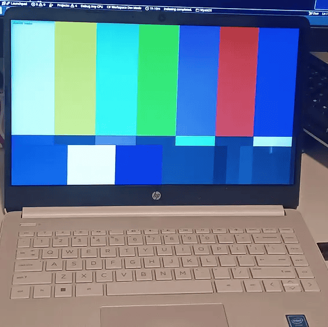
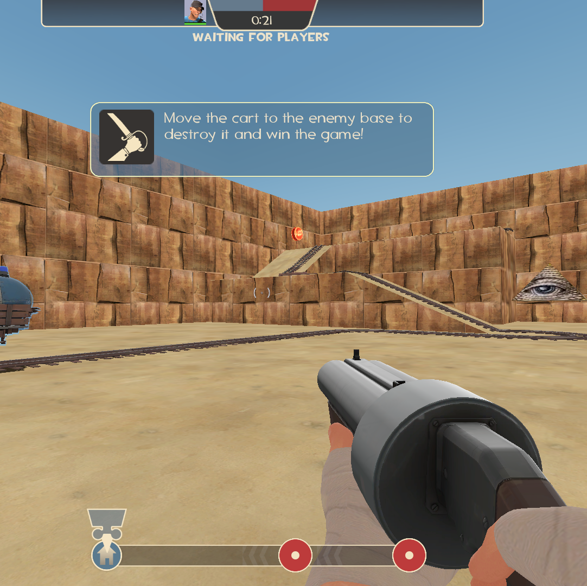

Wyatt McKenzie
Hello, my name is Wyatt McKenzie. I am a 14-year-old hobbyist who enjoys programming and creating things. I don't come from a very technological family, and so i am mostly self-taught. I have multiple projects most of which are discontinued.
Projects:
Cat Clicker
Cat clicker is a game I made in unity, it was my first game to acually be long-term and publically released.
It is a simple clicker game with achevements and shop items.
I am working on putting the game up on steam, but here is a demo for now:
Cat Clicker Demo
WyattOS (discontinued)

WyattOS is a custom Operating System I made using EDK2.
It currently has keyboard support, sound (Kind Of), and graphics. I am working on implimenting mouse inputs from the touchpad but for now it is just a static desktop. I am going to work on making this a full OS complete with an SDK and WiFi support.
Here is a link to the github repo if you want the source code:
Github
pl_illuminati (discontinued)

pl_illuminati is a Team Fortress 2 payload map I made from scratch to learn about the hammer editor and how the game logic works so I can make a custom plugin to go with the map.
It currently is a basic map with a hill, a capture point, and of course... THE ILLUMINATI
Here is a link to the github repo if you want to either play the map or edit it:
Github
If you have any questions or comments about me or my projects, feel free to email me at wmckenzie2022@outlook.com